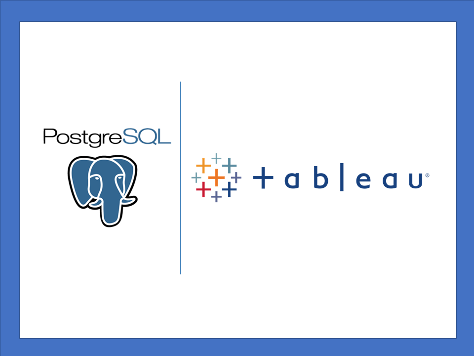

Senior Imaging Scientist collected images
The project (refer to the link below) report some of the MRI images, and related information, collected during my career as an Imaging Scientist.
Please refer to the Curriculum Vitae for the full list of publication where you can find more of the latter and more info of the related projects.
ClinicalVolumes software project
The following project shows a fully developed medical software, mostly wrote in C++, inclusive of a user-friendly interface, for segmantic segmentation.
The tool can be applied to any type of medical dicom file and to any type of anatomical area. The software was developed for MRI images
but in some extent also applicable to CT and echocardiography segmentation. (Note: reserach tool only, not audited). An extended github repository and a kaggle link are reported
where the project can be overviewed in the first and the software downloaded in the second.
ML
automatic segmentation
Deep Learning Unet technique was used to generate an automatic volume segmentation on a GBM model. The python script can be utilized in humans brain as well as in BGM models of animals.
This project creates synthetic mirror images for MRI brain on a murine brain model.
This project uses a Super Resolution GAN (SRGAN) to improve the resolution of medical and non-medical images.
Regression and Classification
in ML
This project creates synthetic mirror images for MRI brain on a murine brain model.
Data analysis with SQL and Tableau
In the following projects SQL was used for data exploration and data wrangling over several databases related to Covid, Technology and more. Tableau Public is used as the visualization tool of choice.


In this project SQL was used to explore a DVD rental database. A variaty of SQL coding techniques were engaged for data exploration and data wrangling.

In this project SQL was used to explore a world population growth over time dataset.
In this project SQL was used on a Covid dataset to extract death world rate and other features related to the pandemic.

In this project SQL was used to explore a dataset with information related to the number of mobile phones worldwide and the relative GDP per capita in order to find a pattern betwen technology adoption and wealth.